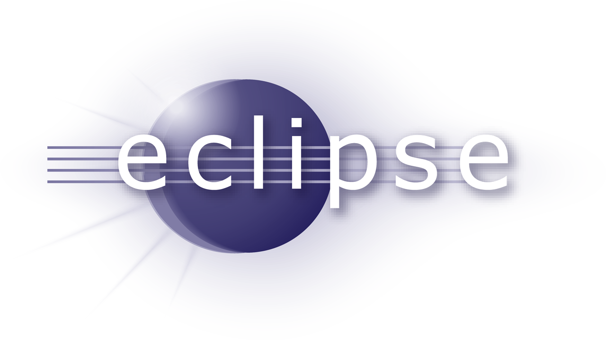

Eclipse
Eclipse is an integrated development environment (IDE) used in computer programming, and is the most widely used Java IDE.[6] It contains a base workspace and an extensible plug-in system for customizing the environment. Eclipse is written mostly in Java and its primary use is for developing Java applications, but it may also be used to develop applications in other programming languages via plug-ins, including Ada, ABAP, C, C++, C#, COBOL, D, Fortran, Haskell, JavaScript, Julia,[7] Lasso, Lua, NATURAL, Perl, PHP, Prolog, Python, R, Ruby (including Ruby on Rails framework), Rust, Scala, Clojure, Groovy, Scheme, and Erlang. It can also be used to develop documents with LaTeX (via a TeXlipse plug-in) and packages for the software Mathematica. Development environments include the Eclipse Java development tools (JDT) for Java and Scala, Eclipse CDT for C/C++, and Eclipse PDT for PHP, among others.
The initial codebase originated from IBM VisualAge.The Eclipse software development kit (SDK), which includes the Java development tools, is meant for Java developers. Users can extend its abilities by installing plug-ins written for the Eclipse Platform, such as development toolkits for other programming languages, and can write and contribute their own plug-in modules. Since the introduction of the OSGi implementation (Equinox) in version 3 of Eclipse, plug-ins can be plugged-stopped dynamically and are termed (OSGI) bundles[9]
Eclipse software development kit (SDK) is free and open-source software, released under the terms of the Eclipse Public License, although it is incompatible with the GNU General Public License.[10] It was one of the first IDEs to run under GNU Classpath and it runs without problems under IcedTea.
Eclipse is an integrated development environment (IDE) used in computer programming, and is the most widely used Java IDE.[6] It contains a base workspace and an extensible plug-in system for customizing the environment. Eclipse is written mostly in Java and its primary use is for developing Java applications, but it may also be used to develop applications in other programming languages via plug-ins, including Ada, ABAP, C, C++, C#, COBOL, D, Fortran, Haskell, JavaScript, Julia,[7] Lasso, Lua, NATURAL, Perl, PHP, Prolog, Python, R, Ruby (including Ruby on Rails framework), Rust, Scala, Clojure, Groovy, Scheme, and Erlang. It can also be used to develop documents with LaTeX (via a TeXlipse plug-in) and packages for the software Mathematica. Development environments include the Eclipse Java development tools (JDT) for Java and Scala, Eclipse CDT for C/C++, and Eclipse PDT for PHP, among others.
The initial codebase originated from IBM VisualAge.The Eclipse software development kit (SDK), which includes the Java development tools, is meant for Java developers. Users can extend its abilities by installing plug-ins written for the Eclipse Platform, such as development toolkits for other programming languages, and can write and contribute their own plug-in modules. Since the introduction of the OSGi implementation (Equinox) in version 3 of Eclipse, plug-ins can be plugged-stopped dynamically and are termed (OSGI) bundles[9]
Eclipse software development kit (SDK) is free and open-source software, released under the terms of the Eclipse Public License, although it is incompatible with the GNU General Public License.[10] It was one of the first IDEs to run under GNU Classpath and it runs without problems under IcedTea.
History
Eclipse was inspired by the Smalltalk-based VisualAge family of integrated development environment (IDE) products.[8] Although fairly successful, a major drawback of the VisualAge products was that developed code was not in a component-based software engineering model. Instead, all code for a project was held in a compressed lump (somewhat like a zip file but in a proprietary format called .dat). Individual classes could not be easily accessed, certainly not outside the tool. A team primarily at the IBM Cary NC lab developed the new product as a Java-based replacement.[11] In November 2001, a consortium was formed with a board of stewards to further the development of Eclipse as open-source software. It is estimated that IBM had already invested nearly $40 million by that time.[12] The original members were Borland, IBM, Merant, QNX Software Systems, Rational Software, Red Hat, SuSE, TogetherSoft, and WebGain.[13] The number of stewards increased to over 80 by the end of 2003. In January 2004, the Eclipse Foundation was created.[14]
Eclipse 3.0 (released on 21 June 2004) selected the OSGi Service Platform specifications as the runtime architecture.[15]
The Association for Computing Machinery recognized Eclipse with the 2011 ACM Software Systems Award on 26 April 2012.[16]
Licensing
The Eclipse Public License (EPL) is the fundamental license under which Eclipse projects are released.[17] Some projects require dual licensing, for which the Eclipse Distribution License (EDL) is available, although use of this license must be applied for and is considered on a case-by-case basis.
Eclipse was originally released under the Common Public License, but was later re-licensed under the Eclipse Public License. The Free Software Foundation has said that both licenses are free software licenses, but are incompatible with the GNU General Public License (GPL).[18]
Name
According to Lee Nackman, Chief Technology Officer of IBM's Rational division (originating in 2003) at that time, the name "Eclipse" (dating from at least 2001) was not a wordplay on Sun Microsystems, as the product's primary competition at the time of naming was Microsoft Visual Studio, which Eclipse was to eclipse.[19]
Different versions of Eclipse have been given different science-related names. The versions named after Callisto, Europa, and Ganymede, which are moons of Jupiter, were followed by a version named after Galileo the discoverer of those moons. These were followed by two sun-themed names, Helios of Greek mythology, and Indigo, one of the seven colors of a rainbow (which is produced by the sun). The version after that, Juno, has a triple meaning: a Roman mythological figure, an asteroid, and a spacecraft to Jupiter.[20] Kepler, Luna, and Mars continued the astronomy theme, and then Neon and Oxygen constitutes a theme of chemical elements. Photon represents a return to sun-themed names.
Architecture
Eclipse uses plug-ins to provide all the functionality within and on top of the run-time system. Its run-time system is based on Equinox, an implementation of the OSGi core framework specification.[41]
In addition to allowing the Eclipse Platform to be extended using other programming languages, such as C and Python, the plug-in framework allows the Eclipse Platform to work with typesetting languages like LaTeX[42] and networking applications such as telnet and database management systems. The plug-in architecture supports writing any desired extension to the environment, such as for configuration management. Java and CVS support is provided in the Eclipse SDK, with support for other version control systems provided by third-party plug-ins.
With the exception of a small run-time kernel, everything in Eclipse is a plug-in. Thus, every plug-in developed integrates with Eclipse in the same way as other plug-ins; in this respect, all features are "created equal".[43] Eclipse provides plug-ins for a wide variety of features, some of which are from third parties using both free and commercial models. Examples of plug-ins include for Unified Modeling Language (UML), for Sequence and other UML diagrams, a plug-in for DB Explorer, and many more.
The Eclipse SDK includes the Eclipse Java development tools (JDT), offering an IDE with a built-in Java incremental compiler and a full model of the Java source files. This allows for advanced refactoring techniques and code analysis. The IDE also makes use of a workspace, in this case a set of metadata over a flat filespace allowing external file modifications as long as the corresponding workspace resource is refreshed afterward.
Eclipse implements the graphical control elements of the Java toolkit called Standard Widget Toolkit (SWT), whereas most Java applications use the Java standard Abstract Window Toolkit (AWT) or Swing. Eclipse's user interface also uses an intermediate graphical user interface layer called JFace, which simplifies the construction of applications based on SWT. Eclipse was made to run on Wayland during a Google Summer of Code (GSoC) Project in 2014.[44]
As of 2017, language packs being developed by the Babel Project provide translations into over 40 natural languages.[5]
Rich Client Platform
Eclipse provides the Rich Client Platform (RCP) for developing general purpose applications. The following components constitute the rich client platform:
Equinox OSGi – a standard bundling framework
Core platform – boot Eclipse, run plug-ins[citation needed]
Standard Widget Toolkit (SWT) – a portable widget toolkit
JFace – viewer classes to bring model view controller programming to SWT, file buffers, text handling, text editors
Eclipse Workbench – views, editors, perspectives, wizards
Examples of rich client applications based on Eclipse are:
IBM Notes 8 and 9
Attachmate-Novell NetIQ Designer for Identity Manager
Apache Directory Studio
Remote Component Environment
Server platform
Eclipse supports development for Tomcat, GlassFish and many other servers and is often capable of installing the required server (for development) directly from the IDE. It supports remote debugging, allowing a user to watch variables and step through the code of an application that is running on the attached server.
Web Tools Platform
The Eclipse Web Tools Platform (WTP) project is an extension of the Eclipse platform with tools for developing Web and Java EE applications. It includes source and graphical editors for a variety of languages, wizards and built-in applications to simplify development, and tools and APIs to support deploying, running, and testing apps.[45]
Modeling platform
The Modeling project contains all the official projects of the Eclipse Foundation focusing on model-based development technologies. All are compatible with the Eclipse Modeling Framework created by IBM. Those projects are separated in several categories: Model Transformation, Model Development Tools, Concrete Syntax Development, Abstract Syntax Development, Technology and Research, and Amalgam.
Model Transformation projects uses Eclipse Modeling Framework (EMF) based models as an input and produce either a model or text as an output. Model to model transformation projects includes ATLAS Transformation Language (ATL), an open source transformation language and toolkit used to transform a given model or to generate a new model from a given EMF model. Model to text transformation projects contains Acceleo, an implementation of MOFM2T, a standard model to text language from the Object Management Group (OMG). The Acceleo code generator can generate any textual language (Java, PHP, Python, etc.) from EMF based models defined with any metamodel (Unified Modeling Language (UML), Systems Modeling Language (SysML), etc.). It is open-source.
Model Development Tools projects are implementations of various modeling standards used in the industry, and their toolkits. Among those projects can be found implementations of several standards:
Unified Modeling Language (UML)
Systems Modeling Language (SysML)
Object Constraint Language (OCL)
Business Process Model and Notation (BPMN)
Interactive Media Manager (IMM)
Semantics of Business Vocabulary and Business Rules (SBVR)
XML Schema (XSD)
National Electronic Distributors Association (NEDA)
The Concrete Syntax Development project contains the Graphical Modeling Framework, an Eclipse-based framework dedicated to the graphical representation of EMF based models.[citation needed]
The Abstract Syntax Development project hosts the Eclipse Modeling Framework, core of most of the modeling project of the Eclipse Foundation and the framework available for EMF like Connected Data Objects (CDO), EMF query or EMF validation.
Technology and Research projects are prototypes of Modeling project; this project is used to host all the modeling projects of the Eclipse Foundation during their incubation phase.[citation needed]
Amalgam provides the packaging and integration between all the available modeling tools for the Eclipse package dedicated to modeling tools.